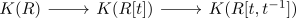

fiber sequence of a regular coherent ring and the laurent polynomial ring
Proposition
Let $R$ be a left regular coherent ring. Then there exists a fiber sequence in spectra

Let $R$ be a left regular coherent ring. Then there exists a fiber sequence in spectra
